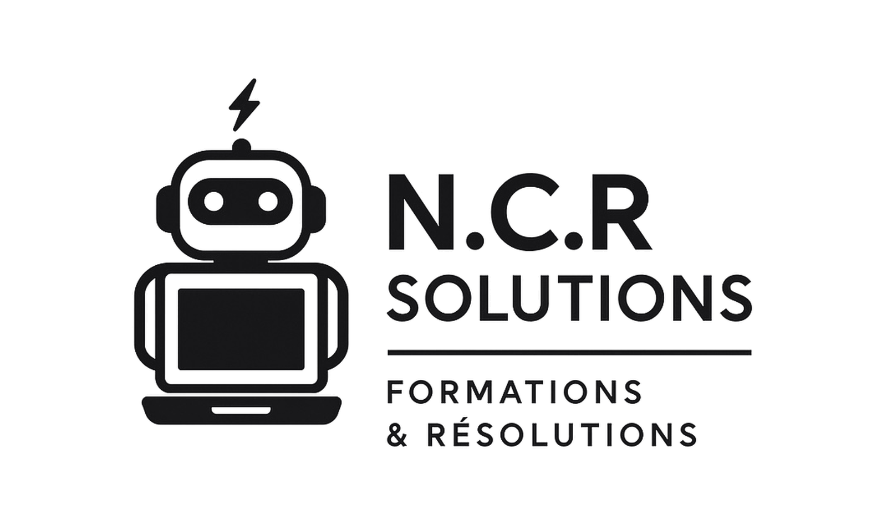

ObserverComprendre le terrain
Identifier les usages, les contraintes et les priorités avant de dessiner la solution.
Besoin · contexte · objectifsExpérience digitale immersive
Un portfolio pensé comme une démonstration : narration immersive, design maîtrisé et projets concrets qui montrent autant le fond que la forme.
Passage 01 · Le seuil
L’écran du robot s’efface progressivement pour devenir un passage de verre court, lumineux et silencieux.
Showroom digital premium
Une méthode lisible, exposée étape après étape dans un espace calme où chaque décision trouve sa place.
Identifier les usages, les contraintes et les priorités avant de dessiner la solution.
Besoin · contexte · objectifsOrganiser les parcours, les données et les responsabilités pour rendre l’usage évident.
Architecture · parcours · hiérarchieTransformer le concept en composants cohérents, rapides et réellement exploitables.
UI · responsive · performanceTester, simplifier et régler les détails qui font passer un produit de correct à remarquable.
Tests · détails · micro-interactionsSortie du showroom
Les réalisations apparaissent une à une avant de rejoindre la grille complète du portfolio.
Découvrir les projets ↓


Réalisations réelles
Une sélection de projets réellement développés, chacun avec sa logique métier, son identité et son niveau d’exigence.
Une plateforme modulaire pensée pour centraliser le pilotage, les documents, les sessions et les parcours métier dans une expérience cohérente et évolutive.

Une PWA de supervision conçue pour relier le centre opérationnel et les agents de terrain dans une interface lisible, rapide et orientée action.


Une application mobile dédiée à la formation SST, conçue pour réviser, s’entraîner et garder un accès simple aux contenus utiles depuis le smartphone.


Un ensemble de sites vitrines avec une structure de groupe cohérente mais des identités visuelles différenciées selon l’univers, la cible et la promesse métier.


Engagement de conception
Chaque projet part d’un besoin réel. L’objectif est de livrer une interface claire, une logique métier solide et un produit que l’utilisateur peut réellement adopter.
Une méthode complète
Le design, le développement et la performance sont traités comme un seul système, pas comme trois prestations séparées.
Parcours lisibles, hiérarchie claire et interactions centrées sur l’usage.
Code structuré, composants réutilisables et comportement responsive maîtrisé.
Chargement optimisé, animations mesurées et expérience fluide sur chaque écran.
Cohérence visuelle et fonctionnelle sur l’ensemble des produits et des pages.
Prêt à construire ?
Site vitrine, produit SaaS, PWA ou application métier : partons du problème réel pour créer une expérience mémorable et utile.